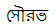

A Really Rambling Account of the Life and Times of Me
My name is Saurabh, written in my mother tongue Bengali as . Curiously
enough, it means "fragrance". I would sure like to know whose
brainwave that was. I was saddled with this name soon after my birth. My birth was certainly an important event for me, but strangely I do not remember any of it. I have it on authority that
this momentous event took place at
Calcutta
, the
capital of West Bengal, in
India
on the 24th day of August shortly after the clock had announced midday. I thus
got to share the birth date with the city of
Calcutta
.
Calcutta
was born thanks to the intrepid soldier of the East India Company, Job
Charnock, who set anchor there having been heckled beyond what his English
patience could stand, by the Mughals in other parts of
West
Bengal
. In 2001 the Calcutta High Court, in a burst of
nationalistic fervor, ruled that a settlement had existed at the current spot
of
Calcutta
long before Job Charnock set foot there. Hence, in its book,
Calcutta
has no birth date. Nevertheless, I
rarely pass on the opportunity to bring this up, fiddlesticks to the venerable
justices.
My father worked for the Federal Government in India, for the Department of
Telecommunications in fact. His job as a Civil Engineer involved building tall
telecommunication towers, climbing to their top to inspect the tower’s
durability and to appreciate the views from that high up, and then building
more buildings (telephone exchanges, etc.).
The job also involved being transferred to a different part of the
country every 3-5 years. Thanks to this, I got to make lots of new friends, got
yanked from different schools, and my old friends transitioned to the long list
of pen friends. I also got to see a lot of interesting places in India
. My mother stayed at home raising the two daredevils, me and my younger brother Sutirtha. In between running us to the swimming lesson, the tutors for English and Physics and Mathematics, and getting us to eat anything other than Maggi Noodles, she managed to instill in us the belief that doing right by even the most insignificant person you meet, is always the right thing. My
brother didn’t see half as many places, since he was packed off to a
hostel to shield him from all these travels (and travails). I always one-up him
on the number of states that I have stayed at. Some of the places I have stayed
at are below. Looking back through the lens of nostalgia, I of course only
recollect how wonderful each was:
·
Jabalpore
- a small scenic city in Madhya Pradesh, the largest state (area-wise) of India,
known for its marble rocks. The city was
very friendly toward two-wheelers and I am told that I would hitch a ride with
many of my father’s colleagues at the back of their two-wheelers and see the
sights and sounds of the city. Now I know where my love of bicycling off the
roads comes from.
·
Shillong
- the capital of Meghalaya in the remote north-east of the country. Meghalaya
literally means "Abode of the clouds" and you better believe it. It
is a wondrous land of magnificent beauty, undulating hills, virgin forests,
cascading waterfalls, and simple Khasi people. Incidentally, the world's
wettest spot - Mawsynram (in terms of average annual rainfall) - is also in
Meghalaya. Shillong is reachable by curvy roads from Guwahati in Assam
,
which is the closest trains go. The roads would make you close your eyes
initially since they are skirted by deep gorges on one side, but then the
"ooh"s and "aah"s on the beauty of the sights around you will cause you to open your eyes. A sign of how
remote some places in Meghalaya that I went to – wide-eyed Khasi people would
point to us and say “Look they are from
India
”. If you go to Shillong
today, do visit my school: St. Edmund’s – English preppie school type with
immaculate landscape and views of snow-capped peaks from the classrooms, and
check out the thriving western music scene of Shillong.
·
Trivandrum - a
city in the southern Indian state of Kerala known for its temples and the
Kovalam beach. Kerala is a small state that has become a shining example for
the rest of India
in many ways, with the maximum literacy rates (above 90%) and similar distinctions
in infant mortality and life expectancy. I had the experience of not
understanding a word of the language spoken there and got good with sign
language skills, which have stood me well in trips to foreign lands that I make
now as part of my professional duties. A vivid image of Kerala is droves of
school-going kids in uniforms who practically take over the roads during the
times when school starts and lets off. I remember that Kerala bucks the trend of most of India of not following rules and things automatically falling in place from amidst the glorious chaos. In Kerala, things were orderly down to the exact amout of tea they will pour in your teacup as you dove into a vigorous debate on some highly esoteric topic.
But through all my wanderings, I kept coming back to my home city of Calcutta
and finally
settled down there to go through the advanced years of my schooling at South
Point. South Point for a while had the dubious distinction of being the largest
school in the world (in terms of number of students). Whether to display the
Guinness Book citation proudly in the principal’s office or jettison a few
hundred students to get off the list – that was a question that divided the
students and the parents alike. South Point gave me wonderful teachers, who taught me skills in writing and reasoning that have survived the years. I also learned to innovate different sports activities since the school had only a tiny sliver of playspace and we jostled with the unending multitude of my schoolmates for that sliver. Thus I learned to play cricket where getting the ball outside a small periphery would get you out.
Calcutta
is
a city crowded, vicious, noisy, bustling, vibrant and friendly - all that and
more, all at once. It's a city where you can sit in the ubiquitious
"coffee houses" for hours and argue vehemently on anything from
Bush’s GPA at Yale, to the blessings of the Tata Nano, to the accompaniment of cigarette puffs while you down tea
(“cha” in Bengali if you want to order it during your stroll through the city)
by the gallon.
West Bengal
may be one of the
few remaining bastions of Marxism in the world, and has been ruled by Communist
governments continuously for more than 30 years now. This "distinction" came to an end in 2011 when the Communists were toppled giving Marx and Engels and Lenin severe heartburn. Bengalis are fiercely
proud of their sweets and their fish dishes, their greats - Rabindranath,
Satyajit Ray, Mother Teresa, and in more recent times, Sourav (there must be
something to that name after all) Ganguly and Amartya Sen, and above all, the sights,
sounds and smells of dear old Calcutta. It has seen an upswing in high tech
multi-national companies setting up shop in the city, egged on by an
increasingly entrepreneur friendly state government. Do not be fooled by my city's surface dust, it conceals gems within it.
I had my first brush with notoriety after my 10th grade
state-wide exam results came out. The many nights of frantic memorizing Mughal
emperors’ birth dates (aka, history) and all the places where bauxite was mined
in India
(aka, geography) bore fruit and I made the top 20 list. These many pats on the
back are sure to cause a lasting effect. They eventually got to my head and I
really dug into Chemistry, Mathematics, and Physics and came out 2nd
in the 12th grade exams. I would really like to know where the guy
who pipped me by a good 40 points (that is like a light year in the Higher
Secondary exam) landed up.
After completing my 12th grade, I went through the grind of the
entrance tests for entering engineering schools. Aided by oodles of luck, grace
of some supernatural power, and the tremendous will-force of my parents, I entered the portals of that hallowed engineering
institution in
India
,
called the Indian Institute of Technology (IIT), at their Kharagpur campus. I also
got to do Computer Science and Engineering, a department and a
field that was your parent's straight ticket to lifelong bragging rights and was reserved for only those
who had done deep penance in the high Himalayas in honor of the IIT gods. I had occasion to meet some really smart students (all those pesky
batchmates who seemed to just get the theorems right away, and I would have to nod so as not to
appear stupid), some great professors (PPC with his algo class was stunning, so
were TKD, PPD, AB, …). I picked up some programming (C; Java was a distant
mystery to academicians then) and as destined, come out a brand new shining
software engineer at the end of the four year pipeline.
True to the sacred tradition of my alma mater, I set forth for the US
after graduation.
Not being content to have waded through 30,000 honorable tomes of computer
science during my undergraduate studies, I got this primal urge
to plough through another few thousands. That together with a king-sized ego of
trying to change the world a wee bit through computer research led me to the
thorny highways and bylanes of a Ph.D. degree. I came to the seemingly sleepy
little town of
Urbana-Champaign (ok, these are
two towns if you want to be technical), about 130 miles south of Chicago. I discovered some
things quickly – the sleepy town is not so sleepy with 36,000 cheering Illini
fans, though we managed to lose 80% of the football and 60% of the basketball
games the four years I was there. It was also not very sleepy for me because my
advisor, Ravi (Iyer), took it in him to teach
me what fault tolerant computing meant, in double quick time. My childhood
paranoia about worst case scenarios helped me immeasurably in designing fault
tolerant systems – Ravi came up with the name
“Chameleon” for the system that I worked on, though I lay claim to “ARMOR” – a
component within Chameleon. I did not do just Computer Science there – I made
use of the endless variety of classes being offered at UIUC. Since Ravi
was footing the bill, I got to take French, ice
skating, Sanskrit, bowling, wine tasting. Aah, it is such a relief to finally
get this all off my chest. I guess
Ravi and my grad
school colleagues got tired of answering all my questions and wanted me out. So
I found myself defending my thesis in 2001. The committee was in a genial mood
and signed off on the dotted line and I found myself walking the walk at the
2001 commencement. My commencement speaker was Stan Ikenberry, a past president
of the University
of Illinois
. He had such
an impressive resume but when I drop his name in a bar on a Friday night, it
does not generate much excitement, alas!
Having graduated from UIUC, I realized I would like to keep poring through
more Computer Science tomes, and hopefully, write some myself. I also got the
bug of spreading the knowledge, filling brains of upcoming CS professionals
with bright and bold ideas, tell them some of the cardinal truths of the field,
such as, CS does not equal Programming, if you are a CS professional, you will
not necessarily have to relocate to Bangalore, etc. So I became a faculty member at Purdue, in the sleepy but beautiful town of West Lafayette. Working with smart colleagues and students, an ability to nurse an impetuous curious urge to know something just for the sake of knowing, exploring fancy, and occasionally fanciful, ideas to solve some nutty problem in CS - what's not to like about the job of a faculty member at a place like Purdue. Rising up through the ranks of academia, you feel you can fly as high as your imagination, though proposal and paper rejects try hard to rein in your flights, but with stunning failure at that.
One fortuitous day in 2003,
I revved up my Nissan and drove to
Chicago
for an ethnic festival. I met Somali there, who was doing her Masters at the
University of Illinois
and the rest is a poem, to be shared over a glass of Muscato at our house one of these days.
She did her PhD in Biomedical Engineering at Purdue, my best lawyerly arguments
having persuaded her to sacrifice the charms of the megalopolis of
Chicago
for the simpler pleasures of
West Lafayette
. She has kept me sane (to some
extent), on my toes (especially, when she zips past me during our bike rides),
energetic (whenever I feel like lolling too much, she lets me know), and fun
(no professorial airs). And then she accepted an offer for post-doctoral studies at the University of Texas at Austin where she is discovering the joys of the two-body problem which has flummoxed many noted physicists.
I am liking this journey enormously – so far, so excellent. The views from
the beaches of D-Day, the top of the palm tree in Tahiti,
the surf board in Florianapolis, and the cage on the London Eye have all been
great. But the view through my office window of the Purdue Bell
Tower against the dusky
sky is the best of all. I will tell you if it changes.

Last
updated: February 6, 2012
Saurabh
Bagchi